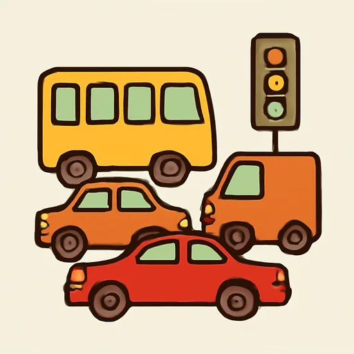
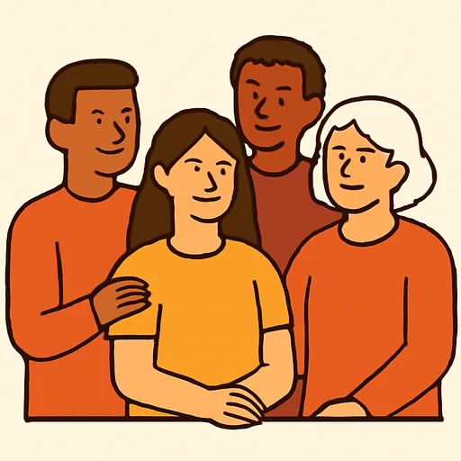
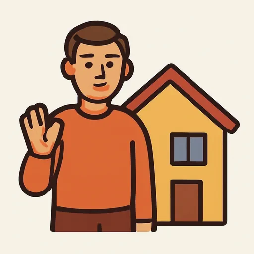

Черновик: урок написан, но преподаватель его ещё не вычитал.
Semana 8 · Día 4 — Mi ciudad: lo que hay y lo que no hay
Неделя 8 · День 4 — Мой город: что есть и чего нет
Сегодня вы научитесь
- говорить, что в городе есть и чего в нём нет: hay / no hay;
- уточнять количество: mucho, poco, bastante, demasiado — и не путать muy с mucho;
- сравнивать два города без сравнительной степени: En Moscú hay…, en Madrid también hay…
1. Разминка (0–3 мин)
- Карточки: 10 слов — вчерашние сокращения вслух полными словами.
- Вопрос по вчерашнему: скажите «сдаётся квартира» и «сдаются две квартиры». Ответьте вслух.
2. Фонетика (3–6 мин)
Ритм: все слоги примерно одинаковой длины. Русский тянет ударный слог и проглатывает остальные («гóрод» → [ГО-рът]). Испанский так не делает: a, e, o без ударения звучат полностью. Прочитайте, хлопая на каждом слоге:
En-mi-ciu-dad-hay-mu-chos-par-ques. (9 слогов) No-hay-me-tro, pe-ro-hay-mu-chos-au-to-bu-ses. (13) Hay-po-co-trá-fi-co-y-po-ca-gen-te. (11)
Ciudad — [сью-ДАД], а не [сью-дъд]. Parques — [ПАР-кес], а не [ПАР-кьс]. Tráfico — три полных слога, [ТРА-фи-ко]. Запишите три фразы и послушайте безударные гласные: они должны быть слышны.
3. Новое (6–16 мин)
Пример
Роса и Николай рассказывают друг другу о своих городах. [AUDIO]
| Español | Русский |
|---|---|
| Rosa: ¿Cómo es tu ciudad? ¿Qué hay en Novosibirsk? | Какой у тебя город? Что есть в Новосибирске? |
| Nikolái: Es una ciudad grande. Hay metro, hay muchos teatros y hay un río muy grande. Pero no hay mar. | Это большой город. Есть метро, много театров и очень большая река. Но моря нет. |
| Rosa: ¿Hay mucho tráfico? | Пробок много? |
| Nikolái: Sí, hay bastante tráfico, y en invierno hay demasiada nieve. ¿Y Bogotá? | Да, пробок довольно много, а зимой слишком много снега. А Богота? |
| Rosa: En Bogotá hay mucha gente y muchos autobuses, pero no hay metro. | В Боготе много людей и много автобусов, но метро нет. |
| Nikolái: ¿No hay metro? | Метро нет? |
| Rosa: No, no hay. Hay muchos parques y muchas bicicletas. | Нет. Зато много парков и много велосипедов. |
| Nikolái: ¿Y en Madrid? | А в Мадриде? |
| Rosa: En Madrid hay metro, hay muchos museos y bastantes parques. No hay mar. | В Мадриде есть метро, много музеев и довольно много парков. Моря нет. |
| Nikolái: En mi barrio no hay ningún cine. Solo hay una tienda pequeña. | В моём районе нет ни одного кинотеатра. Есть только маленький магазин. |
Объяснение
Что есть и чего нет. Отрицание — это просто no перед hay, и больше ничего не меняется:
Hay metro. → No hay metro. Hay parques. → No hay parques. Hay una farmacia. → No hay farmacia. (в отрицании артикль часто уходит)
hay не меняется никогда: ни по числу, ни по роду, ни в отрицании. Одна форма на всё.
Сколько именно — четыре слова:
| Слово | Значение | Согласуется |
|---|---|---|
| mucho / mucha / muchos / muchas | много | в роде и числе |
| poco / poca / pocos / pocas | мало | в роде и числе |
| bastante / bastantes | довольно много, достаточно | только в числе |
| demasiado / -a / -os / -as | слишком много | в роде и числе |
hay mucho tráfico · hay mucha gente · hay muchos parques · hay muchas tiendas hay poco ruido · hay poca nieve · hay bastantes autobuses · hay demasiado tráfico
muy или mucho? Это два разных слова, и поменять их местами нельзя:
muy + прилагательное или наречие: muy grande, muy tranquilo, muy cerca, muy bien. mucho + существительное: mucho tráfico, mucha gente; или после глагола: trabajo mucho.
Ничего и ни одного:
no hay nada de + неисчисляемое: No hay nada de tráfico. — Пробок совсем нет. no hay ningún / ninguna + исчисляемое в единственном числе: No hay ningún cine. No hay ninguna farmacia.
Сравнить два города — без сравнительной степени. Хватает четырёх слов (сравнительная степень будет в 19-й единице):
En Moscú hay metro. En Madrid también hay metro. (тоже есть) En Madrid no hay mar. En Moscú tampoco hay mar. (тоже нет) — ¿Hay metro en Bogotá? — No, no hay. — ¿Y en Novosibirsk? — Sí, hay.
⚠️ Контраст с русским
- В русском «нет» перестраивает всю фразу. «В городе есть метро» → «В городе нет метро»; «есть парки» → «нет парков». Меняется и слово «есть», и падеж существительного — родительный.
- В испанском не меняется ничего: hay → no hay, а существительное остаётся в точности тем же словом. Hay parques → No hay parques. Одна форма hay на единственное и множественное, на мужской и женский, на утверждение и отрицание. Это самое простое слово курса.
- Вы захотите сказать: ✗ No está metro. ✗ No hay el metro. ✗ En mi ciudad no es metro. → Правильно: ✅ En mi ciudad no hay metro.
Вторая ловушка дня: ✗ muy tráfico, ✗ mucho tranquilo → ✅ mucho tráfico, ✅ muy tranquilo. По-русски и то и другое — «очень / много», и граница не чувствуется; по-испански она жёсткая: перед существительным только mucho, перед прилагательным только muy.
И третья: la gente — единственное число, как английское people наоборот. ✗ muchas gentes → ✅ mucha gente.
Что помогает: двойное отрицание. «Нет никакого кино» = No hay ningún cine — два отрицания в одной фразе в обоих языках. В английском так нельзя, в русском и испанском — обязательно.
4. Практика (16–26 мин)
Упражнение А. Поставьте слово в скобках в нужной форме.
Модель: hay ___ tráfico (mucho) → hay mucho tráfico
- En Madrid hay ______ museos. (mucho)
- En mi barrio hay ______ gente. (mucho)
- Hay ______ ruido por la noche. (poco)
- Hay ______ tiendas en esta calle. (bastante)
- En el centro hay ______ coches. (demasiado)
- En invierno hay ______ nieve. (mucho)
- Mi ciudad es ______ tranquila. (muy / mucho)
- En el parque hay ______ bicicletas. (mucho)
- En este pueblo hay ______ habitantes. (poco)
- El metro está ______ cerca. (muy / mucho)
Упражнение Б. Дополните текст «Mi ciudad». Банк слов:
hay (2 раза) · no hay · no · mucho · mucha · muchos · bastantes · ningún · también
En mi ciudad (1) ______ un río muy grande y (2) ______ parques. Pero (3) ______ mar. En el centro hay (4) ______ tráfico y (5) ______ gente. En mi barrio hay (6) ______ tiendas y dos supermercados, pero no hay (7) ______ cine. (8) ______ poco ruido por la noche: es un barrio tranquilo. En Madrid (9) ______ hay metro, y en mi ciudad (10) ______ hay metro.
Упражнение В. Переведите на испанский.
- В моём городе нет метро.
- В центре слишком много машин.
- В моём районе мало шума: это тихий район.
- В Мадриде есть музеи. В Москве тоже есть музеи.
- В моём районе нет ни одной аптеки.
- Здесь много людей и довольно много магазинов.
5. Выход (26–29 мин)
Опишите свой город в десяти фразах. План — чтобы все четыре слова количества и оба сравнения попали в текст:
| Фразы | Что в них |
|---|---|
| 1–2 | что в городе есть: En mi ciudad hay… |
| 3–4 | чего нет: No hay… / No hay ningún… |
| 5–7 | сколько: mucho / poco / bastante / demasiado |
| 8–9 | сравнение с другим городом: también / tampoco |
| 10 | вывод: Es una ciudad grande y tranquila. |
En mi ciudad hay un río muy grande. Hay muchos teatros y bastantes parques. No hay mar. En mi barrio no hay ningún cine…
Напишите десять фраз и прочитайте их вслух, хлопая на слогах — это сегодняшняя фонетика.
6. Итог (29–30 мин)
- [ ] Я говорю hay и no hay, и ничего больше в фразе не меняю.
- [ ] Я выбираю между mucho, poco, bastante, demasiado и согласую их.
- [ ] Я не путаю muy (+ прилагательное) и mucho (+ существительное).
- Добавьте слова дня в колоду. Завтра — ваш район: дорога домой и текст.
Словарь дня
| Español | Русский | Пример |
|---|---|---|
| mucho / muchos | много | Hay muchos parques. |
| poco / pocos | мало | Hay poco ruido. |
| bastante / bastantes | довольно много, достаточно | Hay bastantes tiendas. |
| demasiado | слишком много | Hay demasiado tráfico. |
 el tráfico |
движение, пробки | En el centro hay mucho tráfico. |
 la gente |
люди (единственное число!) | Hay mucha gente en la calle. |
| el ruido | шум | Hay poco ruido por la noche. |
 el habitante |
житель | En mi ciudad hay muchos habitantes. |
| ningún / ninguna | ни один / ни одна | No hay ningún cine. |
| también / tampoco | тоже / тоже не | En Moscú también hay metro. |
Ответы
А. 1. muchos · 2. mucha · 3. poco · 4. bastantes · 5. demasiados · 6. mucha · 7. muy · 8. muchas · 9. pocos · 10. muy. — В 3 и 6 слова неисчисляемые (ruido, nieve), поэтому единственное число: poco ruido, mucha nieve. В 7 и 10 перед прилагательным (tranquila) и перед наречием (cerca) — только muy.
Б. 1. hay · 2. muchos · 3. no hay · 4. mucho · 5. mucha · 6. bastantes · 7. ningún · 8. Hay · 9. también · 10. no. — В 7 именно ningún, а не ninguno: перед существительным мужского рода -o отпадает, как в un / uno.
В. 1. En mi ciudad no hay metro. · 2. En el centro hay demasiados coches. · 3. En mi barrio hay poco ruido: es un barrio tranquilo. · 4. En Madrid hay museos. En Moscú también hay museos. · 5. En mi barrio no hay ninguna farmacia. · 6. Aquí hay mucha gente y bastantes tiendas. — В 1 русское «нет метро» (родительный падеж) толкает к ✗ no hay del metro или ✗ no está metro: по-испански слово остаётся как есть. В 3 «шум» неисчисляемое, поэтому poco, а не pocos. В 5 ninguna в единственном числе, хотя по-русски «ни одной» тоже единственное — тут русский помогает. В 6 ✗ muchas gentes: la gente всегда в единственном числе.